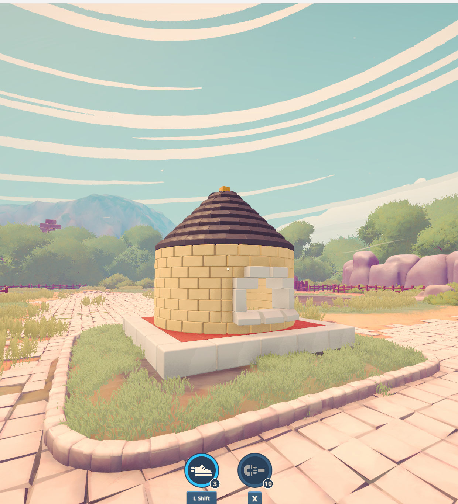
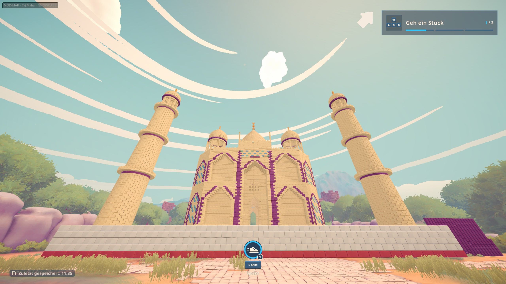
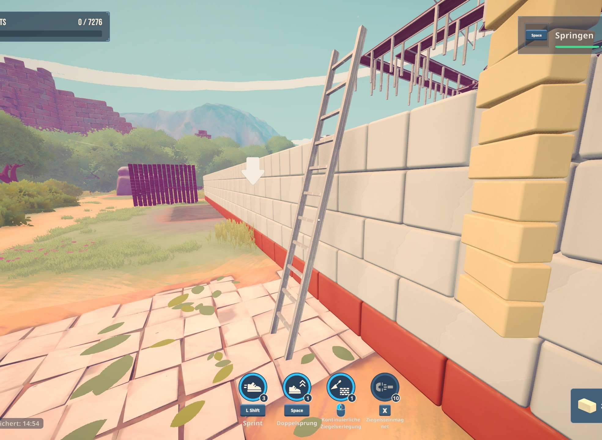
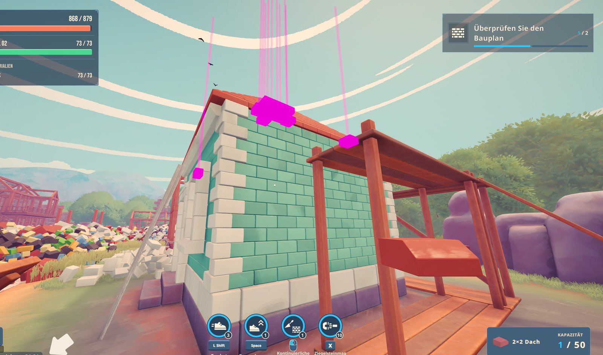

Brick by Brick modsFor Brick by Brick: Tidy Up the Small Town! (Steam)
Extra buildings to build brick by brick, and small mods that make building easier. Every download contains the same unmodified BepInEx 5.4.23.5, so the mods work together: unzip one after the other into the game folder and overwrite.
Slots: the Taj Mahal is played in world slot 3, the Notre-Dame in world slot 4, each in a new save there.
Maps

Test buildings

Taj Mahal recommended

Mods
Extra Buildings


Unofficial fan mods, not made by the game's developers. Ladder, SkillPoints, SkillModify and BuildHelper's ghost hand mark a world as practice (no Steam leaderboard score) once they change something in it; the Extra Buildings worlds are separate from the main world.